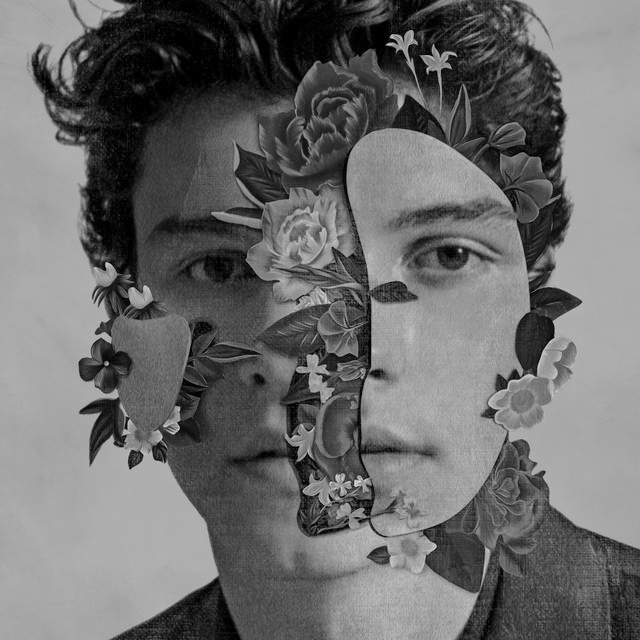
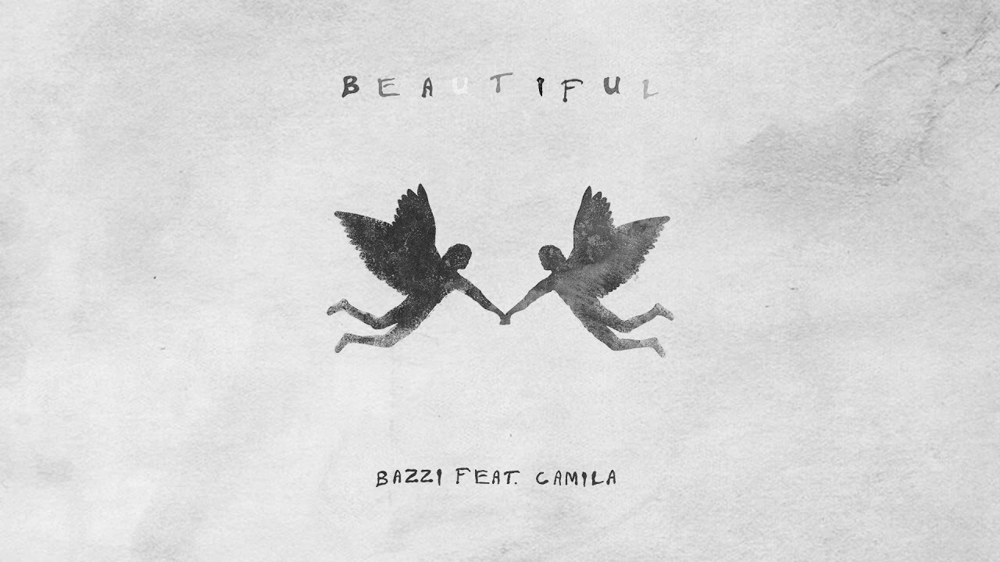

My play list
Versace on the floor
Crazy in love
Lost in japan
Writing's on the wall
Beautiful
Girls like you
 Versace on the floor
Versace on the floor Writing's on the wallVersace on the floorWriting's on the wall
Writing's on the wallVersace on the floorWriting's on the wall